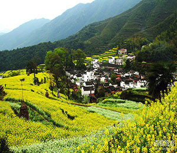

近期文章
23
APR
APR
婺源，位于江西省东北部（赣浙皖三省交界处），徽州六县之一，东邻国家历史文化名城衢州市，西毗瓷都景德镇市，北枕国家级旅游胜地黄山市和古徽州首府国家历史文化名城歙县，南接江南第一仙山三清山，铜都德兴市，婺源素有“书乡”、“茶乡”之称。是全国著名的文化与生态旅游县，被外界誉为“中国最美的乡村”、“一颗镶嵌在赣、浙、皖三省交界处的绿色明珠。

20
APR
APR
婺源如画，浓墨重彩的山水，粉墙黛瓦的民居，清幽古道的缠绵，小桥流水的优雅，令人为之动容。
初识她，柔情蜜意，抨然心动！
晓起村： 依然沉睡的姣羞少女，漠视过客的存在，只独自沉醉于无人的境界。她的千娇百媚在多年后依然还会被收藏在心中。
晓起村： 依然沉睡的姣羞少女，漠视过客的存在，只独自沉醉于无人的境界。她的千娇百媚在多年后依然还会被收藏在心中。